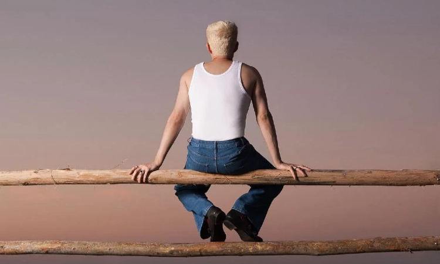
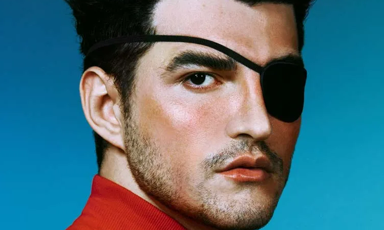

O corpo de Jão caindo do céu após uma flechada foi a imagem escolhida pelo
cantor para ilustrar a capa do novo álbum,
Anti-herói. A escolha simboliza uma imersão nos sentimentos;mais bonitos e mais difíceis;
de um relacionamento, em síntese: é sobre o amor. O disco chegou de surpresa,
após poucos meses do fim da turnê Lobos (2018), trabalho que marca o primeiro álbum do cantor.
Manoela Moraes ~ 08/08/2023
Ler mais

Super marca o fim da era dos quatro elementos e completa o ciclo antes contado pelos álbuns anteriores do artista, Pirata (água), Anti-herói (ar) e Lobos (terra). Uma audição foi realizada neste domingo (13), no Ginásio do Ibirapuera, em São Paulo, onde 12 mil fãs escutaram o disco pela primeira vez.
Leonardo Marques ~ 16/08/2023
Ler mais

Avisa que é ele! Um dos artistas mais em alta no pop brasileiro atualmente,
Jão atingiu mais um grande feito. Segundo a Pró-Música Brasil,
seu álbum “Pirata” alcançou a marca de 160 mil cópias vendidas,
recebendo certificado de platina dupla. O projeto, lançado no final de 2021,
rendeu grandes hits para o cantor, como “Coringa” e “Idiota”. É o terceiro disco do paulista,
sucedendo os também bem-sucedidos “Lobos” e “Anti-Herói”.
Daniel Marques ~ 10/04/2023
Ler mais